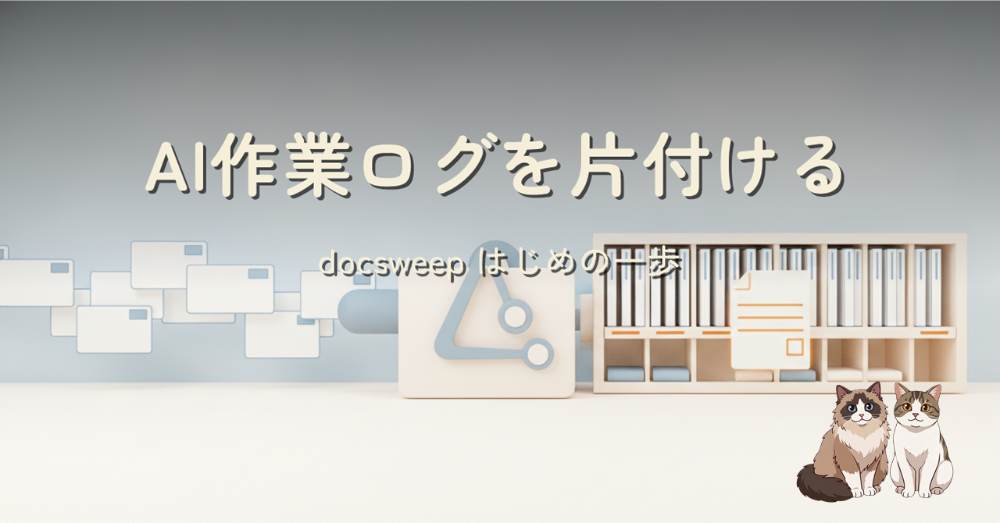
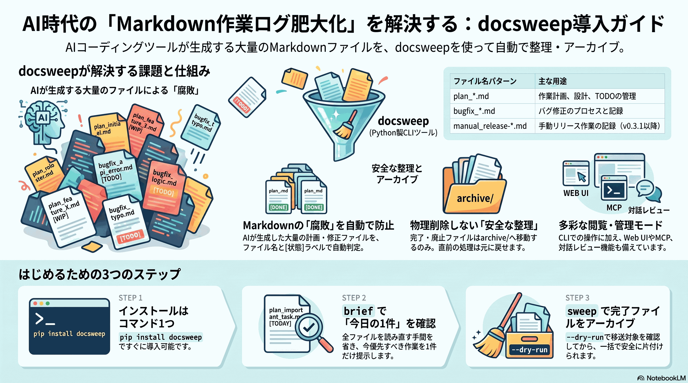

AIコーディングツールが残すplan・bugfix・pendingのMarkdownを、判断できる状態に保って安全にarchiveするPython CLI、docsweepの導入ガイドです。インストールから最初のコマンド、今回見つかったmanual_release記録の取りこぼしと修正内容までまとめました。
docsweepは、作業ログを勝手に削除する道具ではありません。ファイルの種類と状態を別々に読み、完了または廃止と明示されたものだけをarchiveへ移します。まずは設定なしで今日の1件を表示し、必要になったらdry-run、undo、Web UIへ進めます。
今回の改修では、docsweep自身のリリース記録であるmanual_release-*.mdだけが既定typeから漏れていた問題を修正しました。入口の定義を1行足し、認識・状態判定・実移送まで3段階のテストで固定しています。
